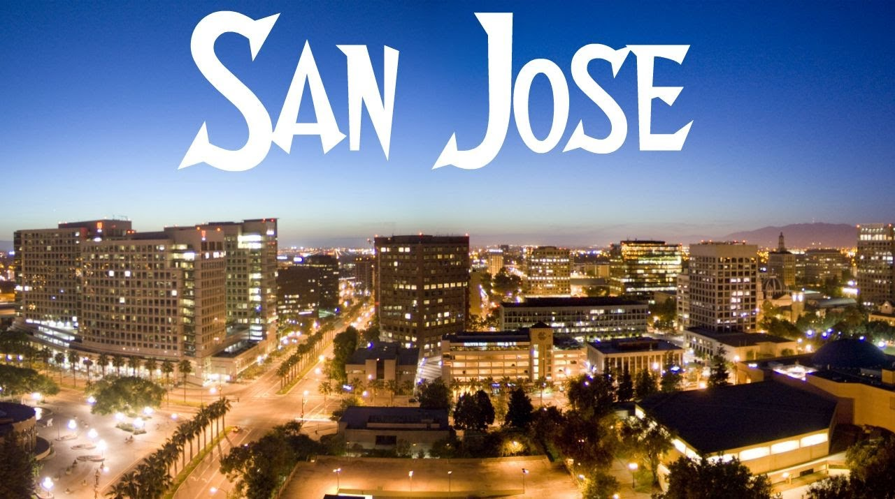

<div>
<!-- *****************************************************************************************************************
	 ABOUT ME
	 ***************************************************************************************************************** -->

	 <div class="container mtb">
	 	<div class="row">
	 		<div class="col-lg-6">
	 			
	 		</div>
	 		
	 		<div class="col-lg-6">
	 			<h4>Yep, geek land!</h4>
	 			<p>San Jose, California. Right next to Mountain View. The whole area is tech, tech, and tech. Drive around, you see HQs of almost all great tech companyes in 
	 			history. UC Berkeley is not far at north. It's right at the birth place of Internet. As a software engineer, it is impossible not to feel "Shit! It's here!" and 
	 			"Oh, man! It's tough!". Talented guys all around the world got sucked into here. You can meet the best of the best engineers around here. You can feel the 
	 			competition here in the air.</p>
	 			<p>You know what's more dangerous than Iraq or Afghanistan? Highway. It's not that war zone is not dangerous. But more people die every year on high ways in 
	 			California than anual American casualty in those two fucked up countries. Though people don't drive that ruthless as in NYC, it's crazy as well, especially when 
	 			it comes to speeding.</p>
	 		</div>
	 	</div>
	 	<div class="row">
	 		<p>Living in San Jose is boring. If you are not a bit nerdy, you will hate it. I assure you. You find a some gathering or party seemingly not that tech somehow around 
	 		here, 8 out of 10 guys you meet there are software/hardware engineers. And out of maybe 20 people, there maybe only one or two girls there at that event. These 
	 		engineers are tech saavy, ambitious, confident. But when it comes to social, night life, we sucks, or most of us sucks. Typical day will be drive to work, work, break, 
	 		work, drive back home, then your own projects. That's it. Weekends? You know, clean ups, fixes, and your own projects. Maybe rafting, maybe hiking, maybe whatever. 
	 		That's not every weekends. Yes, engineers got paid no bad. but considering if you don't learn new things for half a year, you are out, it may not be that good a pay. 
	 		But it's good for survive. And living here not cheap. Rent is higher than New York! But still, we want to be here.</p>
	 		<p>It is the very heart of tech world. New technologis, new frameworks, new standards got invented here. Companies here are about invent and innovations. That's the single 
	 		most important survival skill for companies here. I love it. I mean yes you could do fairly well anywhere on this planet as long as you are in this industry now. But 
	 		it feels so different. Here, you don't innovate, you are out of the window. And that is what push us forward right?</p>
	 		<p>Driving around is not always enjoyable. 65mph, that's you typical speed limit on highways in Cali. But if drive at the speed limit, like I do, around here, be 
	 		prepared to be headlight flashed, honked, or middle fingered. Cars shoots at least 20mph faster than you and passing you. And funny things is if there is a bit raining, 
	 		there is going to be hundres of crashes at the rush hour around the bay area. Seems people rushes without mastering how to rush at the first place.</p>
	 	</div><! --/row -->
	 </div><! --/container -->
</div>
</div>
